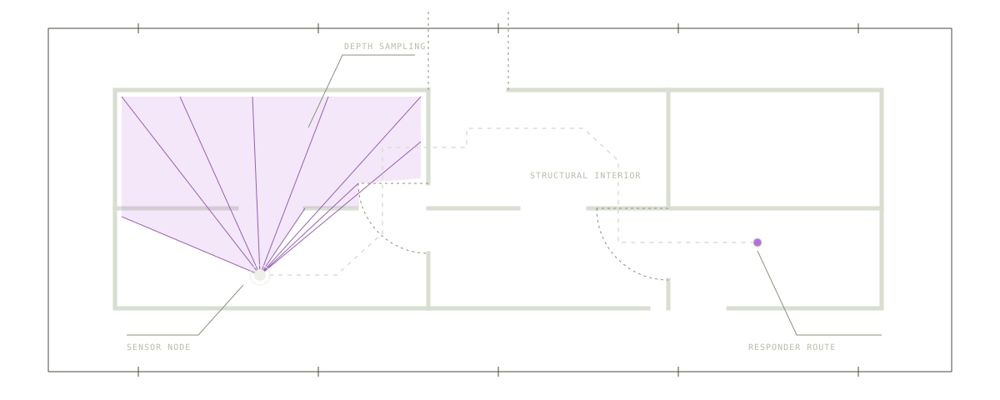

Selected project / 01
Resku
Sensing · Edge computing · Emergency responseUnderstanding the space, the conditions, and the responder.
Resku brings spatial mapping, thermal sensing, and responder telemetry into a connected architecture for structural firefighting and rescue operations.
Read about Resku